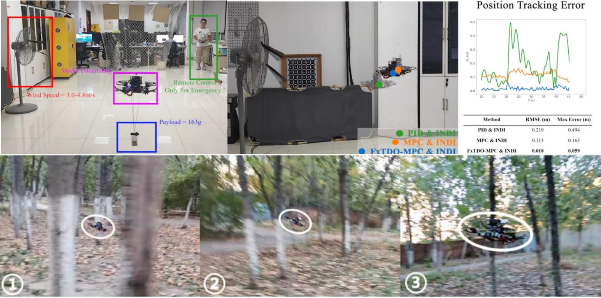
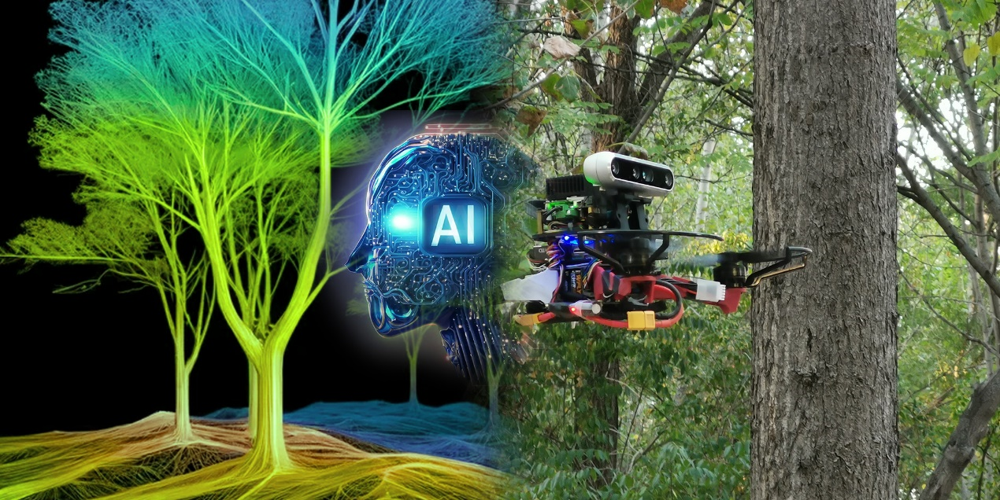
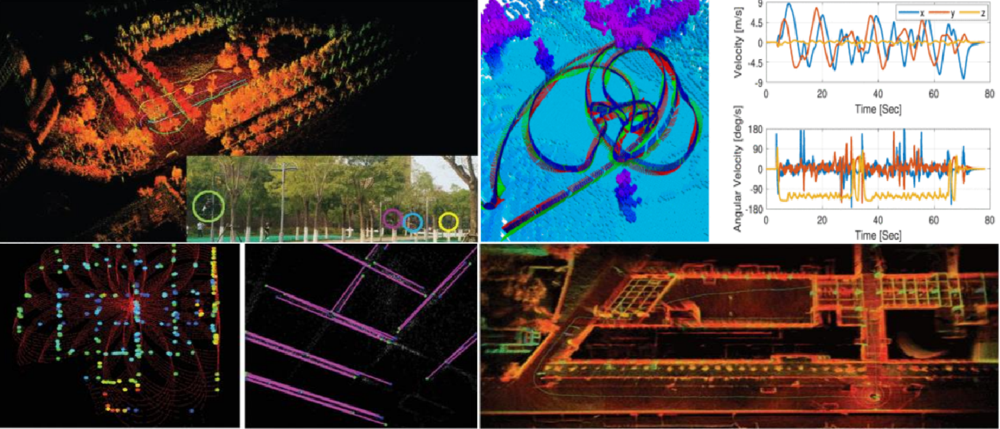

Advanced Control Technology and It's Applications in Robots

This research direction concentrates on developing advanced control
methodologies to stabilize robots under extreme conditions, such as agile flight and
strong wind disturbance. The long-lerm goal is to realize the ultimate control capability
of the robot to enhance the system's robustness and adaptability.
Learning Agile Flight in Complex Environments

This research direction focuses on perception, artificial intelligence,
and autonomous navigation of robots, encompassing areas such as deep learning, reinforcement
learning, and motion planning. We are dedicated to learning the intelligence policy of robots
to navigate autonomously in complex environments and pushing the boundaries to make it faster,
simpler, and more efficient.
Collaborative SLAM

This research direction is dedicated to develope collaborative simultaneous localization
and mapping (SLAM) methods among multiple robots using visual sensors, inertial sensors and radar in various
complex environments. We aim to enable robot teams to flexibly adapt to changes in cluster topology and
communication topology, suppress odometry drift as much as possible, and achieve globally consistent localization
to adapt complex task scenarios.
Intelligent Decision-Making for Multi-Robots Systems
This research direction focuses on developing scalable and decision-making algorithms
to achieve real-time and flexible task management for multi-robots systems in complex environments. With
the developed algorithms, the multi-robots are able to peform fully autonomous task execution.
Motion Planning of Multi-Robot System
The objective of this research is to generate safe and smooth motions for robots'
autonomous navigation, even in challenging environments characterized by unforeseen, dynamically changing,
and rich obstacles. The proposed approaches have been applied to various scenarios, including but not
limited to formation flight and collaborative exploration.